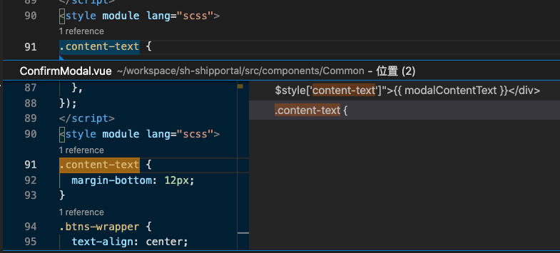
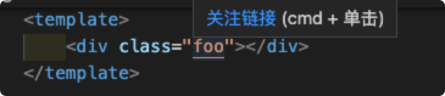
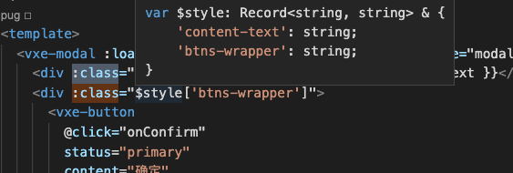
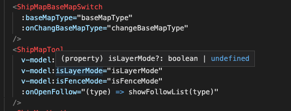
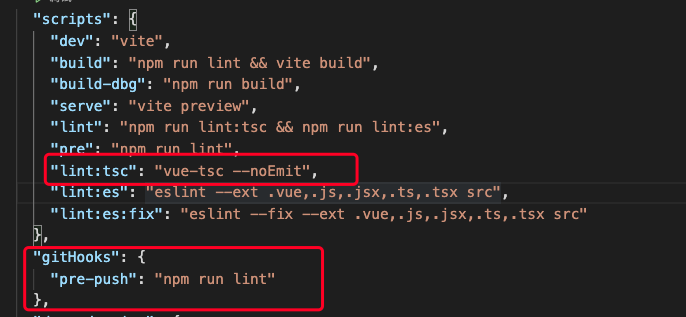
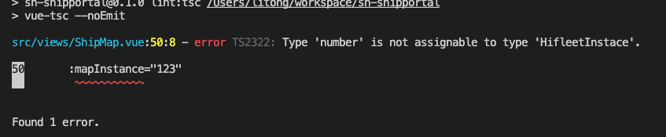

Created by Li Tong
Volar provided Css Class references hint
Css Class tracking back
Css Module type hint
Volar provided ability that is Typescript static type checking In Html reader, witch is template tag, not only provided Props, Events and also could type check at V-models
Now, we can write the code of Html, and don't worried about our variable spelling goes wrong
Volar not only work in vscode, and also had a terminal version, that is Vue-Tsc
 